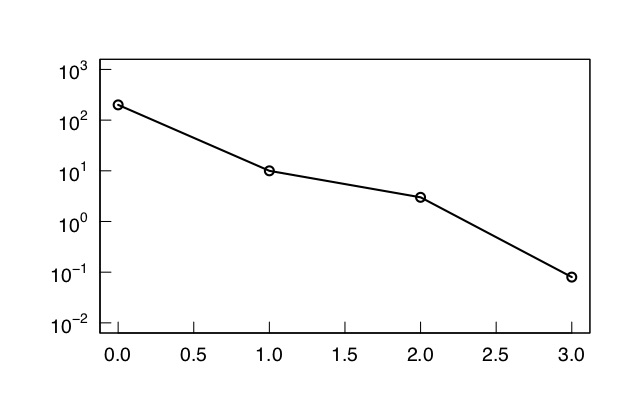
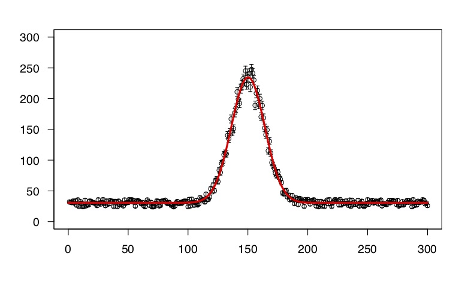
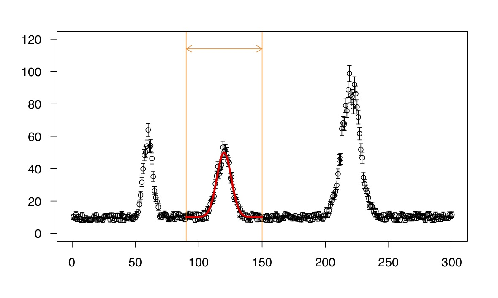
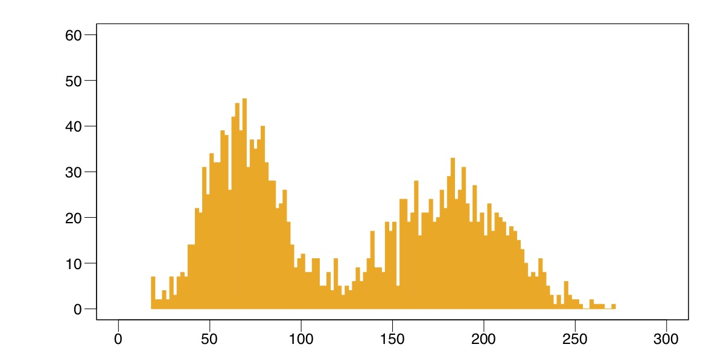
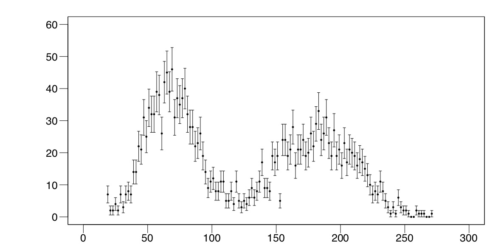
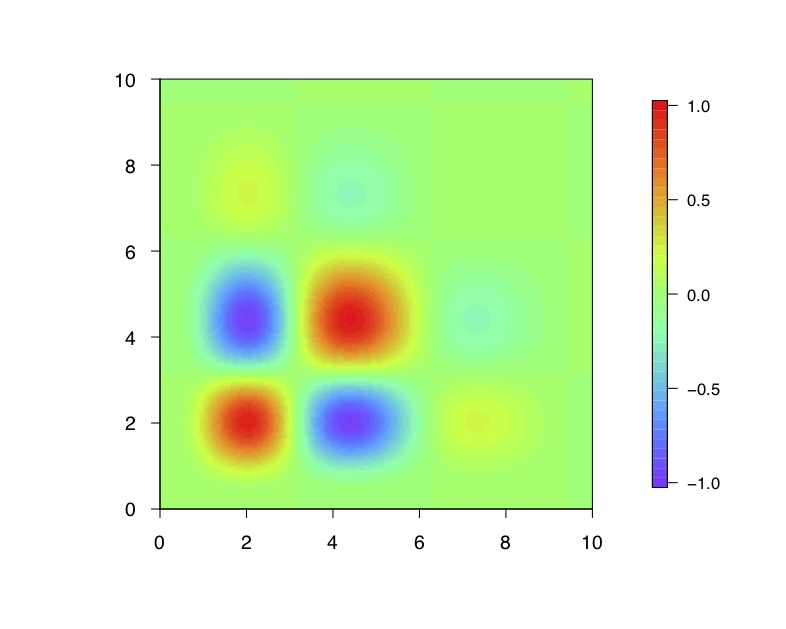

Python入門
Pythonを使ってグラフを書いたり、データ解析・統計処理をするTipsをまとめます。
スクリプトで図を描くと、グラフの書き直し、データの差し替え等の手間が省けます。
また、データに施した処理が見えやすいのでミスが減り、記録に残るので振り返りやすくなります。
このページの目的は、ひとまず動作する雛形を提供することなので、説明はざっくりです。
基本的には、スクリプトを.pyファイルに保存してコンソールから実行すれば動きます。
2020/11/06 Updated
スクリプトの実行
端末で自分の.pyファイルをコマンドによって呼び出す。そのファイルが存在するフォルダで実行すること。
$ python *****.py
ライブラリ
Pythonの強みは充実したライブラリ群です。
主に使うのは数値計算に便利なNumPy、様々な科学計算が可能なSciPy、プロットに便利なMatplotlib、データ解析に強いPandasあたりです。
これらはデフォルトのPythonでは使えないのでpipコマンドで別途インストールする必要があります。
$ pip install numpy scipy matplotlib pandas
ライブラリを使うには.pyファイルの冒頭で宣言が必要です。
import numpy as np
import pandas as pd
import matplotlib.pyplot as plt
from scipy.optimize import minimize
numpy, pandas, matplotlib.pyplotは省略名としてnp, pd, pltを使うことが慣例になっているので従いましょう。
scipyの中のoptimizeモジュールからminimizeというオブジェクトのみを読み込む、といった使い方も可能です。
グラフを書く
●散布図

上図を描くスクリプトです。
ライブラリ(それぞれ様々な機能を持つもの)を導入し、略語を命名します。
ここでは、グラフを書くためのmatplotlib.pyplotのみを導入していますが、通常複数を導入します。
matplotlib.pyplotで、散布図(scatter)を書きます。二つの座標の他、マーカーの色や形を変えられます。
最後にグラフの出力を要請します。(エラーなく進んでいると、表示されます。)
import matplotlib.pyplot as plt
# ライブラリ(ここではmatplotlib.pyplot(グラフを書くためのライブラリ))を導入。
# pltと名づけ、以下pltで呼び出す。
# 散布図を書くときはplt.scatter(), ()内に変数
plt.scatter(1, 2, c="blue", marker="o", s=20, alpha=0.5)
# 左からx座標、y座標
# 以下は任意で c: 色、 marker: 形状、s: サイズ、alpha: 透明度(0~1)
plt.scatter(2, 4, c="orange", marker =".")
plt.scatter(3, 6, c="green", marker ="v")
plt.scatter(4, 8, c="red", marker ="^")
plt.scatter(5, 10, c="purple", marker ="s")
plt.scatter(1, 5, c="brown", marker ="p")
plt.scatter(2, 7, c="pink", marker ="*")
plt.scatter(3, 9, c="gray", marker ="h")
plt.scatter(4, 11, c="olive", marker ="+")
plt.scatter(5, 13, c="cyan", marker ="x")
plt.scatter(1, 8, c="coral", marker ="X")
plt.scatter(2, 10, c="gold", marker ="D")
plt.scatter(3, 12, c="skyblue", marker ="d")
plt.scatter(4, 14, c="magenta", marker ="1")
plt.scatter(5, 16, c="indianred", marker ="2")
plt.show()
# グラフを表示する。
リストを使用して複数点を一度に描くことができる。
また、マーカーの縁を別の色にすることも可能。

import matplotlib.pyplot as plt
x_list=[1, 1, 3, 3, 5, 7, 7, 9, 9]
y_list=[2, 10, 4, 8, 6, 4, 8, 2, 10]
plt.scatter(x_list, y_list, c="red", marker ="o", edgecolors="black")
# edgecolorsで縁の色を指定。
plt.show()
●折れ線グラフ

matplotlib.pyplot(plt)で、折れ線グラフ(plot)を書きます。横軸、縦軸の系列をリストで指定してみましょう。
import matplotlib.pyplot as plt
# プロットする横軸の座標のリスト
x_list=[ 2, 4, 6, 8, 10, 12, 14]
# プロットする縦軸の座標のリスト
y_list=[10, 1, 7, 4, 6, 2, 9]
# 2つのリストの要素数を同じにする必要がある。
# 散布図を書くときはplt.plot(), ()に変数
plt.plot(x_list, y_list, c="blue", ls="-", lw=2, alpha=0.8)
# 左からx座標のリスト、y座標のリスト
# 以下は任意で c: 色、ls: 線のスタイル、lw: 線の太さ、alpha: 透明度(0~1)
plt.show()
折れ線グラフでもmarkerの指定ができます。

import matplotlib.pyplot as plt
x_list =[ 1, 4, 7]
y1_list=[10, 12, 10]
y2_list=[ 7, 9, 7]
y3_list=[ 4, 6, 4]
y4_list=[ 1, 3, 1]
# marker: 形状、ms: マーカーの大きさ、mfc: マーカー内部の色、mec: マーカーの縁の色
plt.plot(x_list, y1_list, c="blue", ls="-", marker="o", ms=10, mfc="white", mec="cyan")
# mfc, mecは省略した場合、それぞれ線と同じ色になる。
plt.plot(x_list, y2_list, c="orange", ls="--", marker="^")
plt.plot(x_list, y3_list, c="green", ls=":", marker="s")
plt.plot(x_list, y4_list, c="red", ls="-.", marker="d")
plt.show()
●片対数グラフを描く
plt.plot等で点や関数をプロットした後、
plt.yscaleでyスケールを"log"にします。
import matplotlib.pyplot as plt
#ライブラリ(ここではmatplotlib.pyplot(グラフを書くためのライブラリ))を導入.これをpltと名付けた。
plt.plot([0,1,2,3],[200,10,3,0.08],marker="o",color="black",linewidth=1)
#x座標の組(必須)、y座標の組(必須)、形、色、外枠の太さ(ここでは、点を結んだ線の太さ)
plt.subplots_adjust(top=0.85,bottom=0.25)
#図全体にしめる、グラフの上下左右の端の位置(0が左(下)端、1が右(上)端)。デフォルトでは、left=0.125、right=0.9、bottom=0.1、top=0.9
plt.yscale('log')
plt.grid(which='major',color='black',linestyle='-')
# グラフに目盛りをつける。
plt.show()
●csvファイルを読み込む
pandasを利用し、csvファイルを読み込む方法を説明します。
csvファイル、table1.csvをdfと名前をつけて読み込みます。
df = pd.read_csv('table1.csv')
任意の行だけ抜き出すこともできます。csvファイル内でxという名前の列は
a=df["x"]
で抜き出せます。
条件式を使うこともできます。yという列の値が0より大きい場合のみxを取り出すとすれば
b=df[df['y']>0]['x']
任意の列を抽出し、グラフを書くことができます。
import pandas as pd
import matplotlib.pyplot as plt
df = pd.read_csv('table1.csv')
x=df['x']
y=df['y']
plt.scatter(x,y)
plt.show()

●エラーバーをつける
エラーバー付きのプロットはplt.errorbarでできます。
plt.errorbar(3, 6, xerr = 0.5, yerr =0.8 , capsize=3, fmt='.', markersize=10, color="w", markeredgecolor="c", ecolor="b")
# この例では変数を10個指定していますが、左から
# プロットする x, yの位置、 x, yのエラーバーの大きさ（片方のみでも可、要らない方を0にすればよい)
# 以降省略可
# capsize:xのエラーバーが ┣─○─┫ のように表示されるとき、縦線部の長さ（yだと横線部）
# fmt, markersize: マーカーの形、大きさ
# color, markeredgecolor, ecolor: マーカー、マーカーの縁、エラーバーの色

上のcsvファイルからグラフを書いてみる。
import pandas as pd
import matplotlib.pyplot as plt
df = pd.read_csv('table1.csv')
x=df['x']
y=df['y']
x_error=df['x_error']
y_error=df['y_error']
plt.errorbar(x, y, xerr = x_error, yerr = y_error, capsize=3, fmt='.',markersize=10, color="w", markeredgecolor="b", ecolor="b")
plt.show()

●滑らかな関数を描く
np.linspace()を使って定義域を決め、この範囲で関数をプロットします。
括弧内は，（最小値、最大値、分割数）で指定します。分割数は省略可。

import numpy as np
import seaborn as sns
import matplotlib.pyplot as plt
sns.set()
#円周率はnp.piで利用できる。
x=np.linspace(-np.pi , 4*np.pi , 200)
#(-π,4π)の間を200分割
y=np.sin(x)
#np.sin()でsin関数
plt.plot(x,y)
#以下軸の設定
#x軸の目盛りをπで表示させたい
#["-π","0","π","2π","3π","4π"]のリストを作る
xtick1 = ["-π","0","π"]
for i in range(3):
txt = "{0}π".format(i+2)
xtick1.append(txt)
#x軸の目盛りを(-π,4π+0.1)の間をπずつとり、xtick1の要素を置く。上限をぴったりnπにするとうまくいかない。
plt.xticks(np.arange(-np.pi, 4*np.pi + 0.1, np.pi),xtick1)
#y軸は(-1,1)を0.5刻みに設定
plt.yticks(np.arange(-1, 1.1, 0.5))
plt.show()
●複数のグラフを同時に描く
split.screenで画面を分割できます．同じ大きさのグラフを同時に描くことができます．
screen(1)のように宣言すると，1番目の画面に図を描くので，これを単純に繰り返します．
xmin<- 0
xmax<- 10
ymax<- 2.0
ymin<- -2.0
pdf("plot.pdf", width = 25/2.54, height = 16/2.54)
marc = c(3, 4, 2, 3) # 余白の広さを行数で指定．下，左，上，右の順．
mgpc = c(3, 0.6, 0) # 余白の使い方．説明，ラベル，軸の位置を行で指定．
tck = 0.04 # 目盛線の長さ
cexaxis=1.2
#画面を2x2に分割する
split.screen(figs = c(2, 2))
#画面1に以下を描く
screen(1)
par(mar = marc)
par(mgp = mgpc)
d <- c(1,1)
plot(d,d,type = 'n',xlab=NA,ylab=NA,xaxt="n",yaxt="n",
ylim=c(ymin,ymax),
xlim=c(xmin,xmax),
xaxs="i",
yaxs="i",
)
abline(h=0)
# xminからxmaxまでを500分割する
x = seq(xmin,xmax,length=500)
# xに対して関数をプロットする
lines (x,sin(x),lwd=2,col="red")
#x軸
axis(side=1,
las=FALSE,
tck=tck,
cex.axis=cexaxis,
family="sans",)
#y軸
axis(side=2,
las=TRUE,
tck=tck,
cex.axis=cexaxis,
family="sans",
)
box()
#画面2に以下を描く
screen(2)
par(mar = marc)
par(mgp = mgpc)
d <- c(1,1)
plot(d,d,type = 'n',xlab=NA,ylab=NA,xaxt="n",yaxt="n",
ylim=c(ymin,ymax),
xlim=c(xmin,xmax),
xaxs="i",
yaxs="i",
)
abline(h=0)
# xminからxmaxまでを500分割する
x = seq(xmin,xmax,length=500)
# xに対して関数をプロットする
lines (x,cos(x)/x,lwd=2,col="blue")
#x軸
axis(side=1,
las=FALSE,
tck=tck,
cex.axis=cexaxis,
family="sans",)
#y軸
axis(side=2,
las=TRUE,
tck=tck,
cex.axis=cexaxis,
family="sans",
)
box()
#画面3に以下を描く
screen(3)
par(mar = marc)
par(mgp = mgpc)
d <- c(1,1)
plot(d,d,type = 'n',xlab=NA,ylab=NA,xaxt="n",yaxt="n",
ylim=c(ymin,ymax),
xlim=c(xmin,xmax),
xaxs="i",
yaxs="i",
)
abline(h=0)
# xminからxmaxまでを500分割する
x = seq(xmin,xmax,length=500)
# xに対して関数をプロットする
lines (x,x**cos(3*x)/10,lwd=2,col="magenta")
#x軸
axis(side=1,
las=FALSE,
tck=tck,
cex.axis=cexaxis,
family="sans",)
#y軸
axis(side=2,
las=TRUE,
tck=tck,
cex.axis=cexaxis,
family="sans",
)
box()
#画面4に以下を描く
screen(4)
par(mar = marc)
par(mgp = mgpc)
d <- c(1,1)
plot(d,d,type = 'n',xlab=NA,ylab=NA,xaxt="n",yaxt="n",
ylim=c(ymin,ymax),
xlim=c(xmin,xmax),
xaxs="i",
yaxs="i",
)
abline(h=0)
# xminからxmaxまでを500分割する
x = seq(xmin,xmax,length=500)
# xに対して関数をプロットする
lines (x,exp(-(x-3)**2)-exp(-(x-7)**2),lwd=2,col="#31E21F")
#x軸
axis(side=1,
las=FALSE,
tck=tck,
cex.axis=cexaxis,
family="sans",)
#y軸
axis(side=2,
las=TRUE,
tck=tck,
cex.axis=cexaxis,
family="sans",
)
box()
dev.off()
Back to TOP
フィッティングする
●ピークをフィッティングする
上図を描くスクリプトです．
# 必要に応じて最初に install.packages("nlme")
library(nlme)
# plot parameters
xmin<- 0.0
xmax<- 300.0
ymax<- 300.0
ymin<- 0.0
pdf("fitting_.pdf", width = 20/2.54, height = 12/2.54)
par(mar = c(4.5, 4.5, 2.5, 2.5)) # 余白の広さを行数で指定．下，左，上，右の順．
par(mgp = c(4, 1.2, 0)) # 余白の使い方．説明，ラベル，軸の位置を行で指定．
tck = -0.03 # 目盛線の長さ
cexaxis=1.2
d <- c(1,1)
plot(d,d,
type = 'n',
ylim=c(ymin,ymax),
xlim=c(xmin,xmax),
pch=1,
cex=1,
xaxt="n",
yaxt="n",
xaxs="r",
yaxs="r",
xlab=NA,
ylab=NA,)
# データを読み込む
da <- read.csv('testdata_peak.csv',header=F,skip=0)
# エラーバーを描く
arrows (da$V1,da$V2-sqrt(da$V2)/2,da$V1,da$V2+sqrt(da$V2)/2, col="black",code = 3, lwd = 1, angle = 90, length = 0.03)
# 点をプロットする
points (da$V1,da$V2, col="black", cex=1.0,pch= 1,lty=1, lwd=1)
# 回帰曲線（非線形最小二乗法）
fit = gnls(
V2 ~ a + b*exp(-c*(V1-d)**2), #フィッティングする式
data = da, #どのデータをつかうか
start = list( a=10.0, b=200.0, c=0.01, d=120.0), #初期値
weights = varPower(fixed=0.5), #おまじない
control = list(nlsTol=1e-5) #収束の判定
)
# フィッテイング結果の情報を出力
print(summary(fit))
# フィッテイングした結果の曲線をグラフに書く
xx <- seq(xmin,xmax,length=300)
prefit = predict(fit, newdata=data.frame("V1"=xx))
lines(xx,prefit,col="red",lty=1,lwd=3)
axis(side=1,
las=FALSE,
tck=tck,
cex.axis=cexaxis,
family="sans",)
axis(side=2,
las=TRUE,
tck=tck,
cex.axis=cexaxis,
family="sans",
)
box()
dev.off()
Rコンソールでの出力（フィッティング結果の情報）
Generalized nonlinear least squares fit
Model: V2 ~ a + b * exp(-c * (V1 - d)^2)
Data: da
AIC BIC logLik
1739.886 1758.405 -864.9429
Variance function:
Structure: Power of variance covariate
Formula: ~fitted(.)
Parameter estimates:
power
0.5
Coefficients:
Value Std.Error t-value p-value
a 30.54003 0.2512761 121.5398 0
b 204.19678 2.2980325 88.8572 0
c 0.00256 0.0000472 54.2655 0
d 150.13128 0.1432365 1048.1359 0
Correlation:
a b c
b -0.031
c 0.267 0.573
d -0.001 0.002 -0.007
Standardized residuals:
Min Q1 Med Q3 Max
-2.85535739 -0.89278584 0.08398119 0.83289111 1.80946192
Residual standard error: 0.6736835
Degrees of freedom: 300 total; 296 residual
●一部のピークのみ抜き出してフィッティングする
subsetを使って，フィッティング専用のデータフレームを作ればよい．
# 必要に応じて最初に install.packages("nlme")
library(nlme)
# plot parameters
xmin<- 0.0
xmax<- 300.0
ymax<- 120.0
ymin<- 0.0
pdf("plot_.pdf", width = 20/2.54, height = 12/2.54)
par(mar = c(4.5, 4.5, 2.5, 2.5)) # 余白の広さを行数で指定．下，左，上，右の順．
par(mgp = c(4, 1.2, 0)) # 余白の使い方．説明，ラベル，軸の位置を行で指定．
tck = -0.03 # 目盛線の長さ
cexaxis=1.2
d <- c(1,1)
plot(d,d,
type = 'n',
ylim=c(ymin,ymax),
xlim=c(xmin,xmax),
pch=1,
cex=1,
xaxt="n",
yaxt="n",
xaxs="r",
yaxs="r",
xlab=NA,
ylab=NA,)
da <- read.csv('testdata_peaksub.csv',header=F,skip=0)
arrows (da$V1,da$V2-sqrt(da$V2)/2,da$V1,da$V2+sqrt(da$V2)/2, col="black",code = 3, lwd = 1, angle = 90, length = 0.03)
points (da$V1,da$V2, col="black", cex=1.0,pch= 1,lty=1, lwd=1)
#１列目がfxmnからfxmxまでのデータを抜き出す
fxmn = 90
fxmx = 150
sa <- subset(da,da$V1>=fxmn & da$V1 <=fxmx)
#フィッティングする範囲をグラフに描いておく
abline(v=fxmn,col="#FF922B",lwd=1)
abline(v=fxmx,col="#FF922B",lwd=1)
arrows(fxmn,ymax*0.95,fxmx,ymax*0.95,code=3,length = 0.10,col="#FF922B")
# 回帰曲線（非線形最小二乗法）
fit = gnls(
V2 ~ a + b*exp(-c*(V1-d)**2), #フィッティングする式
data = sa, #どのデータをつかうか
start = list( a=10.0, b=200.0, c=0.01, d=120.0), #初期値
weights = varPower(fixed=0.5), #おまじない
control = list(nlsTol=1e-5) #収束の判定
)
print( "==============================================================" )
# フィッテイング結果の情報を出力
print(summary(fit))
print( "==============================================================" )
# フィッテイングした結果の曲線をグラフに書く
xx <- seq(fxmn,fxmx,length=300)
prefit = predict(fit, newdata=data.frame("V1"=xx))
lines(xx,prefit,col="red",lty=1,lwd=3)
axis(side=1,
las=FALSE,
tck=tck,
cex.axis=cexaxis,
family="sans",)
axis(side=2,
las=TRUE,
tck=tck,
cex.axis=cexaxis,
family="sans",
)
box()
dev.off()
Back to TOP
検定する
検定は様々な関数が用意されています．実行すると，結果と付随する情報が出力されます．
ここでは，親データから何らかの条件でフィルターして検定するスクリプトを紹介します．
スクリプト
data <- read.csv('testdata.csv',header=F,skip=0)
# dataから１列目が１であるものを抜き出す
sdata <- subset(data, data$V1 == 1 , c(V2,V3,V4,V5))
print( "==============================================================" )
# 読みこんだデータの概要
print(summary(data))
print( "==============================================================" )
# t検定
print( t.test(sdata$V2,sdata$V3,var.equal=T) )
print( "==============================================================" )
# F検定
print( var.test(sdata$V2,sdata$V5,var.equal=T) )
print( "==============================================================" )
# 無相関検定
print( cor.test(sdata$V2,sdata$V3,method="pearson") )
print( "==============================================================" )
出力結果
> source('rscript.r')
[1] "=============================================================="
V1 V2 V3 V4
Min. :0.000 Min. :0.0000567 Min. :0.001791 Min. :-0.03723
1st Qu.:2.000 1st Qu.:0.2374926 1st Qu.:0.245031 1st Qu.: 0.23094
Median :4.000 Median :0.4798864 Median :0.479479 Median : 0.47874
Mean :3.925 Mean :0.4877129 Mean :0.499339 Mean : 0.48765
3rd Qu.:6.000 3rd Qu.:0.7497028 3rd Qu.:0.756424 3rd Qu.: 0.74319
Max. :8.000 Max. :0.9989265 Max. :0.998886 Max. : 1.03703
V5 V6 V7
Min. :0.0001928 Min. :0.0000535 Mode:logical
1st Qu.:0.4642972 1st Qu.:0.1902790 NA's:1000
Median :0.8321843 Median :0.3755209
Mean :0.6986144 Mean :0.3765137
3rd Qu.:0.9751899 3rd Qu.:0.5464797
Max. :0.9999283 Max. :0.8383903
[1] "=============================================================="
Two Sample t-test
data: sdata$V2 and sdata$V3
t = -1.8449, df = 234, p-value = 0.06632
alternative hypothesis: true difference in means is not equal to 0
95 percent confidence interval:
-0.148015188 0.004861086
sample estimates:
mean of x mean of y
0.4536442 0.5252212
[1] "=============================================================="
F test to compare two variances
data: sdata$V2 and sdata$V5
F = 0.79422, num df = 117, denom df = 117, p-value = 0.2142
alternative hypothesis: true ratio of variances is not equal to 1
95 percent confidence interval:
0.5518048 1.1431384
sample estimates:
ratio of variances
0.7942224
[1] "=============================================================="
Pearson's product-moment correlation
data: sdata$V2 and sdata$V3
t = -0.77048, df = 116, p-value = 0.4426
alternative hypothesis: true correlation is not equal to 0
95 percent confidence interval:
-0.2489039 0.1108340
sample estimates:
cor
-0.07135488
[1] "=============================================================="
Back to TOP
ヒストグラムを作る
●シンプルなヒストグラムを描く
上図を描くスクリプトです．
hist関数でヒストグラム化すると同時にグラフも書きます．
# plot area
xmax<- 300
xmin<- 0
ymax<- 60
ymin<- 0
pdf("hist_.pdf", width = 30/2.54, height = 15/2.54)
par(mar = c(3.0, 8.0, 2, 2)) # 余白の広さを行数で指定．下，左，上，右の順．
par(mgp = c(4, 1.2, 0)) # 余白の使い方．説明，ラベル，軸の位置を行で指定．
tck = -0.04 # 目盛線の長さ
cexaxis=1.5
d <- c(0,0)
plot(d,d,
type = 'n',
ylim=c(ymin,ymax),
xlim=c(xmin,xmax),
pch=1,
cex=1,
xaxt="n",
yaxt="n",
xaxs="r",
xlab=NA,
ylab=NA)
# データを読み込む
data <- read.csv('testdata_hist.csv',header=F,skip=0)
# ２列目をヒストグラム化する．breaksにbinの数を入れる．prob=Tとすると面積が規格化される
hist1 <- hist(data$V2, col = "#FFA903", border = "#FFA903", breaks = 100, add=T, lwd=1, prob=F, plot=T)
yrange <- c(xmin,xmax) # 範囲
tickValues <- pretty(yrange) # 自動で区分け
tickStrings <- sprintf("%.0f",tickValues) # 小数点以下3桁まで表示
axis(side=1,
las=FALSE,
tck=tck,
cex.axis=cexaxis,
at=tickValues,
labels=tickStrings,
family="sans",)
yrange <- c(ymin,ymax) # 範囲
tickValues <- pretty(yrange) # 自動で区分け
tickStrings <- sprintf("%.0f",tickValues) # 小数点以下3桁まで表示
axis(side=2,
las=TRUE,
tck=tck,
cex.axis=cexaxis,
family="sans",
at=tickValues,
labels=tickStrings,
)
box()
dev.off()
●ヒストグラム化したデータをいじる
上図を描くスクリプトです．
hist関数でヒストグラム化し，binごとの点をプロットし，エラーバーをつけます．
# plot area
xmax<- 300
xmin<- 0
ymax<- 60
ymin<- 0
pdf("hist_.pdf", width = 30/2.54, height = 15/2.54)
par(mar = c(3.0, 8.0, 2, 2)) # 余白の広さを行数で指定．下，左，上，右の順．
par(mgp = c(4, 1.2, 0)) # 余白の使い方．説明，ラベル，軸の位置を行で指定．
tck = -0.04 # 目盛線の長さ
cexaxis=1.5
d <- c(0,0)
plot(d,d,
type = 'n',
ylim=c(ymin,ymax),
xlim=c(xmin,xmax),
pch=1,
cex=1,
xaxt="n",
yaxt="n",
xaxs="r",
xlab=NA,
ylab=NA)
#データを読み込む
data <- read.csv('testdata_hist.csv',header=F,skip=0)
#２列目をヒストグラム化，プロットはしない
hist1 <- hist(data$V2, breaks = 100, plot=F)
#binの中央の位置に，集計された数をプロットする
points (hist1$mids,hist1$counts, lwd = 1, pch=21, col="black", bg="black",cex=0.5)
#エラーバーをつける
arrows (hist1$mids,hist1$counts-sqrt(hist1$counts),hist1$mids,hist1$counts+sqrt(hist1$counts),code=3,lwd=1,angle=90,length=0.03)
yrange <- c(xmin,xmax) # 範囲
tickValues <- pretty(yrange) # 自動で区分け
tickStrings <- sprintf("%.0f",tickValues) # 小数点以下3桁まで表示
axis(side=1,
las=FALSE,
tck=tck,
cex.axis=cexaxis,
at=tickValues,
labels=tickStrings,
family="sans",)
yrange <- c(ymin,ymax) # 範囲
tickValues <- pretty(yrange) # 自動で区分け
tickStrings <- sprintf("%.0f",tickValues) # 小数点以下3桁まで表示
axis(side=2,
las=TRUE,
tck=tck,
cex.axis=cexaxis,
family="sans",
at=tickValues,
labels=tickStrings,
)
box()
dev.off()
Back to TOP
連立微分方程式を解く
●連立微分方程式を解いて時間発展をプロットする
下図のように，３つの成分の時間発展を計算して，その変化をグラフに表示するスクリプトを紹介します．
解くべき方程式を自作の関数に書き込み，時間ステップを指定してode関数によって解きます．
答えは行列に成分の順番に格納されているので，これをlines関数でプロットしています．
# 使う前に install.packages("deSolve")
library(deSolve)
# プロットする範囲
xmin<- 0
xmax<- 20
ymax<- 1.0
ymin<- 0
# グラフをpdfで出力
pdf("ode_eg.pdf", width = 15/2.54, height = 12/2.54)
par(mar = c(5.0, 5.0, 3, 3)) # 余白の広さを行数で指定．下，左，上，右の順．
par(mgp = c(4, 1.2, 0)) # 余白の使い方．説明，ラベル，軸の位置を行で指定．
tck = -0.04 # 目盛線の長さ
cexaxis=1.2
# グラフエリアだけ準備する
d <- c(0,0)
plot(d,d,
type = 'n',
ylim=c(ymin,ymax),
xlim=c(xmin,xmax),
pch=1,
cex=1,
xaxt="n",
yaxt="n",
xaxs="i",
yaxs="i",
xlab=NA,
ylab=NA)
# 速度定数の定義
rab <- 1.0
rba <- 0.5
rbc <- 0.2
# ここに解きたい方程式を書く
myfunc <- function(t,y,parms){
dy1 <- - rab*y[1] + rba*y[2]
dy2 <- rab*y[1] - rba*y[2] - rbc*y[2]
dy3 <- rbc*y[2]
list(c(dy1,dy2,dy3))
}
# 初期値
yini <- c(y1=1, y2=0,y3=0)
# 時間の刻み（0--20まで，0.01刻み）
tgrid <- seq(0, 20, by=0.01)
# 微分方程式を解いた結果
out <- ode (times = tgrid, y=yini, func = myfunc, parms=NULL)
# 解が得られているか出力
print( head(out,n=10) )
# out[,1]に時間が，y1=[,2], y2=[,3], ...と格納されている
lines(out[,1], out[,2], col="#F73149", lty=1, lwd=2)
lines(out[,1], out[,3], col="#0094F7", lty=2, lwd=2)
lines(out[,1], out[,4], col="#F74AE6", lty=3, lwd=2)
# 軸を書く
yrange <- c(xmin,xmax) # 範囲
tickValues <- pretty(yrange) # 自動で区分け
tickStrings <- sprintf("%.0f",tickValues) # 小数点以下0桁まで表示
# X軸
axis(side=1,
las=FALSE,
tck=tck,
cex.axis=cexaxis,
at=tickValues,
labels=tickStrings,
family="sans",)
yrange <- c(ymin,ymax) # 範囲
tickValues <- pretty(yrange) # 自動で区分け
tickStrings <- sprintf("%.1f",tickValues) # 小数点以下1桁まで表示
# Y軸
axis(side=2,
las=TRUE,
tck=tck,
cex.axis=cexaxis,
family="sans",
at=tickValues,
labels=tickStrings,
)
box()
dev.off()
●連立微分方程式を繰り返し解いて10秒後の成分量を俯瞰する
forループを使って速度定数を変えながら繰り返し解き，10秒後の成分量を記録します．
試行回数に対して各成分量と目標値との差分（の和）をプロットして俯瞰し，条件を満たす速度定数を探します．
結果は write.tableで出力します．
# 使う前に install.packages("deSolve")
library(deSolve)
# プロットする範囲
xmin<- 0
xmax<- 216
ymax<- 1.2
ymin<- 0
# グラフをpdfで出力
pdf("ode_eg.pdf", width = 20/2.54, height = 12/2.54)
par(mar = c(5.0, 5.0, 3, 3)) # 余白の広さを行数で指定．下，左，上，右の順．
par(mgp = c(4, 1.2, 0)) # 余白の使い方．説明，ラベル，軸の位置を行で指定．
tck = -0.04 # 目盛線の長さ
cexaxis=1.2
# グラフエリアだけ準備する
d <- c(0,0)
plot(d,d,
type = 'n',
ylim=c(ymin,ymax),
xlim=c(xmin,xmax),
pch=1,
cex=1,
xaxt="n",
yaxt="n",
xaxs="i",
yaxs="i",
xlab=NA,
ylab=NA)
n=8
df <- data.frame(matrix(rep(NA, n), nrow=1))[numeric(0), ]
colnames(df) <- c("ic","rab","rba","rbc","t","y1","y2","y3")
nab = 6
nba = 6
nbc = 6
ic = 0
for (i in 1:nab){
for (j in 1:nba){
for (k in 1:nbc){
ic = ic +1
print(ic)
# 速度定数の定義
rab <- 0.05 + 0.05*(i-1)
rba <- 0.05 + 0.05*(j-1)
rbc <- 0.05 + 0.05*(k-1)
# ここに解きたい方程式を書く
myfunc <- function(t,y,parms){
dy1 <- - rab*y[1] + rba*y[2]
dy2 <- rab*y[1] - rba*y[2] - rbc*y[2]
dy3 <- rbc*y[2]
list(c(dy1,dy2,dy3))
}
# 初期値
yini <- c(y1=1, y2=0,y3=0)
# 時間の刻み（0--10まで，0.01刻み）
nl = 1000
tgrid <- seq(0, 10, length=nl)
# 微分方程式を解いた結果
out <- ode (times = tgrid, y=yini, func = myfunc, parms=NULL)
# t=10の値をデータフレームに保存する
df[ic,] <- c(ic,rab,rba,rbc,out[nl,"time"],out[nl,"y1"],out[nl,"y2"],out[nl,"y3"])
} # k
} # j
} # i
# 解が得られているか出力
print( head(df,n=10) )
# 試行回数icに対してそれぞれの値をプロットする
points (df$ic,df$y1, col="#F73149", lty=1, lwd=2, pch=1)
points (df$ic,df$y2, col="#0094F7", lty=1, lwd=2, pch=1)
points (df$ic,df$y3, col="#4FE50C", lty=1, lwd=2, pch=1)
# 目標値との差分の和を折れ線でプロットする
y1goal = 0.6
y2goal = 0.1
y3goal = 0.3
lines (df$ic,(abs(df$y1-y1goal)+abs(df$y2-y2goal)+abs(df$y3-y3goal)), col="#aaaaaa", lty=1, lwd=2)
points (df$ic,(abs(df$y1-y1goal)+abs(df$y2-y2goal)+abs(df$y3-y3goal)), col="#aaaaaa",bg="#aaaaaa", lty=1, lwd=2, pch=21, cex=0.6)
# データフレームをファイルに出力する
write.table(df, "df.csv", append = F, sep = ",", row.names = T, quote = F)
# 軸を書く
yrange <- c(xmin,xmax) # 範囲
tickValues <- pretty(yrange) # 自動で区分け
tickStrings <- sprintf("%.0f",tickValues) # 小数点以下3桁まで表示
# X軸
axis(side=1,
las=FALSE,
tck=tck,
cex.axis=cexaxis,
at=tickValues,
labels=tickStrings,
family="sans",)
yrange <- c(ymin,ymax) # 範囲
tickValues <- pretty(yrange) # 自動で区分け
tickStrings <- sprintf("%.1f",tickValues) # 小数点以下3桁まで表示
# Y軸
axis(side=2,
las=TRUE,
tck=tck,
cex.axis=cexaxis,
family="sans",
at=tickValues,
labels=tickStrings,
)
box()
dev.off()
出力ファイルの冒頭（df.csv）
ic,rab,rba,rbc,t,y1,y2,y3
1,1,0.05,0.05,0.05,10,0.672455090343185,0.24867813151177,0.0788667781450439
2,2,0.05,0.05,0.1,10,0.663401652541804,0.199655832272703,0.136942515185491
3,3,0.05,0.05,0.15,10,0.656176660881707,0.163454654312053,0.180368684806239
4,4,0.05,0.05,0.2,10,0.650341130450326,0.13630446889027,0.213354400659401
5,5,0.05,0.05,0.25,10,0.645572576632117,0.115617998761016,0.238809424606866
6,6,0.05,0.05,0.3,10,0.641631993005794,0.0996040841517488,0.258763922842453
7,7,0.05,0.1,0.05,10,0.722484832732879,0.207809961380856,0.0697052058862633
8,8,0.05,0.1,0.1,10,0.707676870234675,0.170002265552752,0.122320864212574
9,9,0.05,0.1,0.15,10,0.695719607366012,0.141624482020769,0.162655910613215
10,10,0.05,0.1,0.2,10,0.685951713566814,0.119990112379265,0.194058174053917
Back to TOP
二次元のカラーマップを描く
三次元の図を色の濃淡で表す図を描くスクリプトです．

#必要に応じて install.packages("akima")
#必要に応じて install.packages("fields")
library(akima)
library(fields)
xmin = 0
xmax = 10
ymin = 0
ymax = 10
# x,y座標に対してzの値が指定されたデータフレームを作る．csvから読み込んでも良い．
# ここではsin(x)*sin(y)*x^3*y^3*exp(-x-y)という形の関数を採用する．
x <- seq(xmin,xmax,length=100)
y <- seq(ymin,ymax,length=100)
xx <- seq(length=100^2)
yy <- seq(length=100^2)
zz <- seq(length=100^2)
k=0
for (i in 1:100){
for (j in 1:100){
k = k + 1
zz[k] = sin(x[i])*sin(y[j])*x[i]**3*y[j]**3*exp(-x[i]-y[j] )
xx[k] = x[i]
yy[k] = y[j]
}
}
data <- data.frame(V1=xx,V2=yy,V3=zz)
# カラーマップを作るための２次元補間を行う．
dat.interp <- interp(data$V1,data$V2,data$V3,
xo=seq(min(data$V1), max(data$V1), length =200),
yo=seq(min(data$V2), max(data$V2), length =200),
)
# カラーバーの定義
colPal2 <- colorRampPalette(c("#8C36FF","#2CA7FF","#11FFAC","#BAFF27","#FF8E19","#FF0E16"))
pdf("image_.pdf", width = 20/2.54, height = 16/2.54)
par(mar = c(6.0, 8.0, 4.0,4)) # 余白の広さを行数で指定．下，左，上，右の順．
par(mgp = c(4, 1.2, 0)) # 余白の使い方．説明，ラベル，軸の位置を行で指定．
# image.plotはカラーバーをつけたグラフを作成する
image.plot(dat.interp$x,dat.interp$y,dat.interp$z,
zlim=c(-1.00,1.00),
xlim=c(xmin,xmax),ylim=c(ymin,ymax),
legend.mar=8,
legend.width=1.0,
xlab=NA,
ylab=NA,
axes=F, #軸は自分で描くのでここではF
col = colPal2(40),
cex.axis = 1.2,
useRaster=T
)
# 軸は自分で描く
tck = -0.02
cexaxis = 1.2
axis(side=1,
las=F,
tck=tck,
cex.axis=cexaxis,
family="sans",)
axis(side=2,
las=T,
tck=tck,
cex.axis=cexaxis,
family="sans",)
box()
dev.off()
Back to TOP
インストール
下記参照のこと．
Back to TOP
関数の使い方に困ったら
下記サイトなどご参考に．
R documentationあるいはコンソールで
> ?lines
Back to TOP
R studioで使う
ターミナルとRコンソール，ファインダー（エクスプローラー）を統合した環境にR studioがあります．コマンドに慣れていない人はこちらをお勧めします．
右下のファイル一覧で自分のデータやスクリプトをおいている作業ディレクトリに移動し，「More」から「Set As Working Dirctory」を
選択する．その後，source('rscript.r')と左側のコンソールに入力し．実行する．
Back to TOP
Terminalで使う
Terminalで自分の作業ディレクトリに移動する． Macではファインダーでoption+command+cでパスコピーし，cdで直接移動すると早い．
$ rsource('rscript.r')と入力し，実行する．
終了するには
> q() Back to TOP
色の指定
グラフを描く際、色を指定する場合が多くある。使える色の名前については こちら を参照。 色の指定をしない場合、"Tableau Palette" の10色が順に使われる。11色目はtab:blueに戻る。
Back to TOP